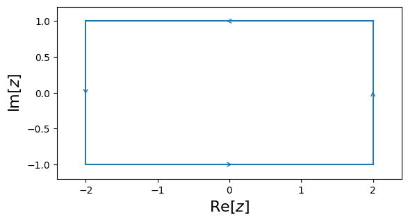

Tutorial¶
Contours¶
cxroots is not a global rootfinder: it can only find roots within a given region of the complex plane. So the first step is to specify this region as the interior of a contour. cxroots allows the user to choose from one of four kinds of contours:
| Circle | Rectangle | Annulus | Annulus Sector |
 |
 |  |
 |
For example, to define a rectangle whose verticies are the points \(0, i, 2+i, 2\) we would write:
from cxroots import Rectangle
rect = Rectangle([0,2], [0,1])
To check that this is what we want we can plot this contour using matplotlib:
rect.show()
(Source code, png, hires.png, pdf)
{kind=link}
{kind=link}

Rootfinding¶
To find the roots of a function \(f(z)\) within a contour \(C\) we can use the method C.roots(f) or preferably C.roots(f, df) if the derivative df is known.
For example, suppose we want to find all the roots of the function \(f(z) = iz^5 + z\sin(z)\) within a circle of radius 2 and centered at \(z=0\). With cxroots this acomplished with the following short Python script:
from numpy import sin, cos
f = lambda z: 1j*z**5 + z*sin(z) # Define f(z)
df = lambda z: 5j*z**4 + z*cos(z) + sin(z) # Define f'(z)
from cxroots import Circle
C = Circle(0, 2) # Define a circle, centered at 0 and with radius 2
r = C.roots(f, df) # Find the roots of f(z) within the circle
In the first three lines we define the function \(f(z)\) and its derivative \(f'(z)\).
We then define our contour, in this case the circle \(C=\{z\in\mathbb{C}\,|\,|z|=2\}\).
The method C.roots(f, df) on the last line returns a RootResult object which we can use to print the roots and their multiplicities:
print(r)
[Parameter(name='originalContour', type=':class:`Contour <cxroots.Contour.Contour>`', desc=['The contour which bounds the region in which all the roots of', 'f(z) are sought.']), Parameter(name='f', type='function', desc=['A function of a single complex variable, z, which is analytic', 'within the contour and has no poles or roots on the contour.']), Parameter(name='df', type='function, optional', desc=['A function of a single complex variable which is the derivative', 'of the function f(z). If df is not given then it will be', 'approximated with a finite difference formula.']), Parameter(name='guessRoots', type='list, optional', desc=['A list of known roots or guesses for roots (they are checked', 'before being accepted).']), Parameter(name='guessRootSymmetry', type='function, optional', desc=['A function of a single complex variable, z, which returns a list', 'of all points which are expected to be roots of f, given that z', 'is a root of f.']), Parameter(name='newtonStepTol', type='float, optional', desc=['The required accuracy of the root. The iterative method used to', 'give a final value for each root will exit if the step size, dx,', 'between sucessive iterations satisfies abs(dx) < newtonStepTol', 'and iterBestAttempt is False.']), Parameter(name='attemptIterBest', type='bool, optional', desc=['If True then the iterative method used to refine the roots will', 'exit when error of the previous iteration, x0, was at least as', 'good as the current iteration, x, in the sense that', 'abs(f(x)) >= abs(f(x0)) and the previous iteration satisfied', 'abs(dx0) < newtonStepTol. In this case the preivous iteration', 'is returned as the approximation of the root.']), Parameter(name='newtonMaxIter', type='int, optional', desc=['The iterative method used to give a final value for each root', 'will exit if the number of iterations exceeds newtonMaxIter.']), Parameter(name='rootErrTol', type='float, optional', desc=['A complex value z is considered a root if abs(f(z)) < rootErrTol']), Parameter(name='absTol', type='float, optional', desc=['Absolute error tolerance used by the contour integration.']), Parameter(name='relTol', type='float, optional', desc=['Relative error tolerance used by the contour integration.']), Parameter(name='integerTol', type='float, optional', desc=['A number is considered an integer if it is within integerTol of', 'an integer. Used when determing if the value for the number of', 'roots within a contour and the values of the computed', 'multiplicities of roots are acceptably close to integers.']), Parameter(name='NIntAbsTol', type='float, optional', desc=['The absolute error tolerance used for the contour integration', 'when determining the number of roots within a contour. Since', 'the result of this integration must be an integer it can be much', 'less accurate than usual.']), Parameter(name='M', type='int, optional', desc=['If the number of roots (including multiplicites) within a', 'contour is greater than M then the contour is subdivided', 'further. M must be greater than or equal to the largest', 'multiplcity of any root.']), Parameter(name='errStop', type='float, optional', desc=['The number of distinct roots within a contour, n, is determined', 'by checking if all the elements of a list of contour integrals', 'involving formal orthogonal polynomials are sufficently close to', 'zero, ie. that the absolute value of each element is < errStop.', 'If errStop is too large/small then n may be smaller/larger than', 'it actually is.']), Parameter(name='intMethod', type="{'quad', 'romb'}, optional", desc=["If 'quad' then :func:`scipy.integrate.quad` is used to perform the", "integral. If 'romb' then Romberg integraion, using", ':func:`scipy.integrate.romb`, is performed instead. Typically, quad is', 'the better choice but it requires that the real and imaginary', 'parts of each integral are calculated sepeartely, in addition,', "if df is not provided, 'quad' will require additional function", 'evaluations to approximate df at each point that f is evaluated', "at. If evaluating f is expensive then 'romb' may be more", 'efficient since it computes the real and imaginary parts', 'simultaniously and if df is not provided it will approximate it', 'using only the values of f that would be required by the', 'integration routine in any case.']), Parameter(name='divMin', type='int, optional', desc=['If the Romberg integration method is used then divMin is the', 'minimum number of divisions before the Romberg integration', 'routine is allowed to exit.']), Parameter(name='divMax', type='int, optional', desc=['If the Romberg integration method is used then divMax is the', 'maximum number of divisions before the Romberg integration', 'routine exits.']), Parameter(name='m', type='int, optional', desc=["Only used if df=None and method='quad'. The argument order=m is", 'passed to :func:`numdifftools.Derivative` and is the order of the error', 'term in the Taylor approximation. m must be even.']), Parameter(name='verbose', type='bool, optional', desc=['If True certain messages concerning the rootfinding process will', 'be printed.'])]
Multiplicity | Root
------------------------------------------------
1 | -0.861622958732 +0.447663621211i
1 | 0.000000000000 -1.062365701233i
2 | 0.000000000000 +0.000000000000i
1 | 0.861622958732 +0.447663621211i
We can also plot the roots using matplotlib:
r.show()
{kind=link}
The RootResult object also contains the roots and multiplicites as lists which can be accessed as:
roots, multiplicities = r
print(roots)
print(multiplicities)
[Parameter(name='originalContour', type=':class:`Contour <cxroots.Contour.Contour>`', desc=['The contour which bounds the region in which all the roots of', 'f(z) are sought.']), Parameter(name='f', type='function', desc=['A function of a single complex variable, z, which is analytic', 'within the contour and has no poles or roots on the contour.']), Parameter(name='df', type='function, optional', desc=['A function of a single complex variable which is the derivative', 'of the function f(z). If df is not given then it will be', 'approximated with a finite difference formula.']), Parameter(name='guessRoots', type='list, optional', desc=['A list of known roots or guesses for roots (they are checked', 'before being accepted).']), Parameter(name='guessRootSymmetry', type='function, optional', desc=['A function of a single complex variable, z, which returns a list', 'of all points which are expected to be roots of f, given that z', 'is a root of f.']), Parameter(name='newtonStepTol', type='float, optional', desc=['The required accuracy of the root. The iterative method used to', 'give a final value for each root will exit if the step size, dx,', 'between sucessive iterations satisfies abs(dx) < newtonStepTol', 'and iterBestAttempt is False.']), Parameter(name='attemptIterBest', type='bool, optional', desc=['If True then the iterative method used to refine the roots will', 'exit when error of the previous iteration, x0, was at least as', 'good as the current iteration, x, in the sense that', 'abs(f(x)) >= abs(f(x0)) and the previous iteration satisfied', 'abs(dx0) < newtonStepTol. In this case the preivous iteration', 'is returned as the approximation of the root.']), Parameter(name='newtonMaxIter', type='int, optional', desc=['The iterative method used to give a final value for each root', 'will exit if the number of iterations exceeds newtonMaxIter.']), Parameter(name='rootErrTol', type='float, optional', desc=['A complex value z is considered a root if abs(f(z)) < rootErrTol']), Parameter(name='absTol', type='float, optional', desc=['Absolute error tolerance used by the contour integration.']), Parameter(name='relTol', type='float, optional', desc=['Relative error tolerance used by the contour integration.']), Parameter(name='integerTol', type='float, optional', desc=['A number is considered an integer if it is within integerTol of', 'an integer. Used when determing if the value for the number of', 'roots within a contour and the values of the computed', 'multiplicities of roots are acceptably close to integers.']), Parameter(name='NIntAbsTol', type='float, optional', desc=['The absolute error tolerance used for the contour integration', 'when determining the number of roots within a contour. Since', 'the result of this integration must be an integer it can be much', 'less accurate than usual.']), Parameter(name='M', type='int, optional', desc=['If the number of roots (including multiplicites) within a', 'contour is greater than M then the contour is subdivided', 'further. M must be greater than or equal to the largest', 'multiplcity of any root.']), Parameter(name='errStop', type='float, optional', desc=['The number of distinct roots within a contour, n, is determined', 'by checking if all the elements of a list of contour integrals', 'involving formal orthogonal polynomials are sufficently close to', 'zero, ie. that the absolute value of each element is < errStop.', 'If errStop is too large/small then n may be smaller/larger than', 'it actually is.']), Parameter(name='intMethod', type="{'quad', 'romb'}, optional", desc=["If 'quad' then :func:`scipy.integrate.quad` is used to perform the", "integral. If 'romb' then Romberg integraion, using", ':func:`scipy.integrate.romb`, is performed instead. Typically, quad is', 'the better choice but it requires that the real and imaginary', 'parts of each integral are calculated sepeartely, in addition,', "if df is not provided, 'quad' will require additional function", 'evaluations to approximate df at each point that f is evaluated', "at. If evaluating f is expensive then 'romb' may be more", 'efficient since it computes the real and imaginary parts', 'simultaniously and if df is not provided it will approximate it', 'using only the values of f that would be required by the', 'integration routine in any case.']), Parameter(name='divMin', type='int, optional', desc=['If the Romberg integration method is used then divMin is the', 'minimum number of divisions before the Romberg integration', 'routine is allowed to exit.']), Parameter(name='divMax', type='int, optional', desc=['If the Romberg integration method is used then divMax is the', 'maximum number of divisions before the Romberg integration', 'routine exits.']), Parameter(name='m', type='int, optional', desc=["Only used if df=None and method='quad'. The argument order=m is", 'passed to :func:`numdifftools.Derivative` and is the order of the error', 'term in the Taylor approximation. m must be even.']), Parameter(name='verbose', type='bool, optional', desc=['If True certain messages concerning the rootfinding process will', 'be printed.'])]
[-1.0623657012328733j, (-0.8616229587319407+0.44766362121071324j), (0.8616229587319407+0.44766362121071324j), (3.228017150600116e-29+5.629878413432768e-29j)]
[1, 1, 1, 2]
or as attributes:
r.roots
[Parameter(name='originalContour', type=':class:`Contour <cxroots.Contour.Contour>`', desc=['The contour which bounds the region in which all the roots of', 'f(z) are sought.']), Parameter(name='f', type='function', desc=['A function of a single complex variable, z, which is analytic', 'within the contour and has no poles or roots on the contour.']), Parameter(name='df', type='function, optional', desc=['A function of a single complex variable which is the derivative', 'of the function f(z). If df is not given then it will be', 'approximated with a finite difference formula.']), Parameter(name='guessRoots', type='list, optional', desc=['A list of known roots or guesses for roots (they are checked', 'before being accepted).']), Parameter(name='guessRootSymmetry', type='function, optional', desc=['A function of a single complex variable, z, which returns a list', 'of all points which are expected to be roots of f, given that z', 'is a root of f.']), Parameter(name='newtonStepTol', type='float, optional', desc=['The required accuracy of the root. The iterative method used to', 'give a final value for each root will exit if the step size, dx,', 'between sucessive iterations satisfies abs(dx) < newtonStepTol', 'and iterBestAttempt is False.']), Parameter(name='attemptIterBest', type='bool, optional', desc=['If True then the iterative method used to refine the roots will', 'exit when error of the previous iteration, x0, was at least as', 'good as the current iteration, x, in the sense that', 'abs(f(x)) >= abs(f(x0)) and the previous iteration satisfied', 'abs(dx0) < newtonStepTol. In this case the preivous iteration', 'is returned as the approximation of the root.']), Parameter(name='newtonMaxIter', type='int, optional', desc=['The iterative method used to give a final value for each root', 'will exit if the number of iterations exceeds newtonMaxIter.']), Parameter(name='rootErrTol', type='float, optional', desc=['A complex value z is considered a root if abs(f(z)) < rootErrTol']), Parameter(name='absTol', type='float, optional', desc=['Absolute error tolerance used by the contour integration.']), Parameter(name='relTol', type='float, optional', desc=['Relative error tolerance used by the contour integration.']), Parameter(name='integerTol', type='float, optional', desc=['A number is considered an integer if it is within integerTol of', 'an integer. Used when determing if the value for the number of', 'roots within a contour and the values of the computed', 'multiplicities of roots are acceptably close to integers.']), Parameter(name='NIntAbsTol', type='float, optional', desc=['The absolute error tolerance used for the contour integration', 'when determining the number of roots within a contour. Since', 'the result of this integration must be an integer it can be much', 'less accurate than usual.']), Parameter(name='M', type='int, optional', desc=['If the number of roots (including multiplicites) within a', 'contour is greater than M then the contour is subdivided', 'further. M must be greater than or equal to the largest', 'multiplcity of any root.']), Parameter(name='errStop', type='float, optional', desc=['The number of distinct roots within a contour, n, is determined', 'by checking if all the elements of a list of contour integrals', 'involving formal orthogonal polynomials are sufficently close to', 'zero, ie. that the absolute value of each element is < errStop.', 'If errStop is too large/small then n may be smaller/larger than', 'it actually is.']), Parameter(name='intMethod', type="{'quad', 'romb'}, optional", desc=["If 'quad' then :func:`scipy.integrate.quad` is used to perform the", "integral. If 'romb' then Romberg integraion, using", ':func:`scipy.integrate.romb`, is performed instead. Typically, quad is', 'the better choice but it requires that the real and imaginary', 'parts of each integral are calculated sepeartely, in addition,', "if df is not provided, 'quad' will require additional function", 'evaluations to approximate df at each point that f is evaluated', "at. If evaluating f is expensive then 'romb' may be more", 'efficient since it computes the real and imaginary parts', 'simultaniously and if df is not provided it will approximate it', 'using only the values of f that would be required by the', 'integration routine in any case.']), Parameter(name='divMin', type='int, optional', desc=['If the Romberg integration method is used then divMin is the', 'minimum number of divisions before the Romberg integration', 'routine is allowed to exit.']), Parameter(name='divMax', type='int, optional', desc=['If the Romberg integration method is used then divMax is the', 'maximum number of divisions before the Romberg integration', 'routine exits.']), Parameter(name='m', type='int, optional', desc=["Only used if df=None and method='quad'. The argument order=m is", 'passed to :func:`numdifftools.Derivative` and is the order of the error', 'term in the Taylor approximation. m must be even.']), Parameter(name='verbose', type='bool, optional', desc=['If True certain messages concerning the rootfinding process will', 'be printed.'])]
[-1.0623657012328733j, (-0.8616229587319407+0.44766362121071324j), (0.8616229587319407+0.44766362121071324j), (3.228017150600116e-29+5.629878413432768e-29j)]
r.multiplicities
[Parameter(name='originalContour', type=':class:`Contour <cxroots.Contour.Contour>`', desc=['The contour which bounds the region in which all the roots of', 'f(z) are sought.']), Parameter(name='f', type='function', desc=['A function of a single complex variable, z, which is analytic', 'within the contour and has no poles or roots on the contour.']), Parameter(name='df', type='function, optional', desc=['A function of a single complex variable which is the derivative', 'of the function f(z). If df is not given then it will be', 'approximated with a finite difference formula.']), Parameter(name='guessRoots', type='list, optional', desc=['A list of known roots or guesses for roots (they are checked', 'before being accepted).']), Parameter(name='guessRootSymmetry', type='function, optional', desc=['A function of a single complex variable, z, which returns a list', 'of all points which are expected to be roots of f, given that z', 'is a root of f.']), Parameter(name='newtonStepTol', type='float, optional', desc=['The required accuracy of the root. The iterative method used to', 'give a final value for each root will exit if the step size, dx,', 'between sucessive iterations satisfies abs(dx) < newtonStepTol', 'and iterBestAttempt is False.']), Parameter(name='attemptIterBest', type='bool, optional', desc=['If True then the iterative method used to refine the roots will', 'exit when error of the previous iteration, x0, was at least as', 'good as the current iteration, x, in the sense that', 'abs(f(x)) >= abs(f(x0)) and the previous iteration satisfied', 'abs(dx0) < newtonStepTol. In this case the preivous iteration', 'is returned as the approximation of the root.']), Parameter(name='newtonMaxIter', type='int, optional', desc=['The iterative method used to give a final value for each root', 'will exit if the number of iterations exceeds newtonMaxIter.']), Parameter(name='rootErrTol', type='float, optional', desc=['A complex value z is considered a root if abs(f(z)) < rootErrTol']), Parameter(name='absTol', type='float, optional', desc=['Absolute error tolerance used by the contour integration.']), Parameter(name='relTol', type='float, optional', desc=['Relative error tolerance used by the contour integration.']), Parameter(name='integerTol', type='float, optional', desc=['A number is considered an integer if it is within integerTol of', 'an integer. Used when determing if the value for the number of', 'roots within a contour and the values of the computed', 'multiplicities of roots are acceptably close to integers.']), Parameter(name='NIntAbsTol', type='float, optional', desc=['The absolute error tolerance used for the contour integration', 'when determining the number of roots within a contour. Since', 'the result of this integration must be an integer it can be much', 'less accurate than usual.']), Parameter(name='M', type='int, optional', desc=['If the number of roots (including multiplicites) within a', 'contour is greater than M then the contour is subdivided', 'further. M must be greater than or equal to the largest', 'multiplcity of any root.']), Parameter(name='errStop', type='float, optional', desc=['The number of distinct roots within a contour, n, is determined', 'by checking if all the elements of a list of contour integrals', 'involving formal orthogonal polynomials are sufficently close to', 'zero, ie. that the absolute value of each element is < errStop.', 'If errStop is too large/small then n may be smaller/larger than', 'it actually is.']), Parameter(name='intMethod', type="{'quad', 'romb'}, optional", desc=["If 'quad' then :func:`scipy.integrate.quad` is used to perform the", "integral. If 'romb' then Romberg integraion, using", ':func:`scipy.integrate.romb`, is performed instead. Typically, quad is', 'the better choice but it requires that the real and imaginary', 'parts of each integral are calculated sepeartely, in addition,', "if df is not provided, 'quad' will require additional function", 'evaluations to approximate df at each point that f is evaluated', "at. If evaluating f is expensive then 'romb' may be more", 'efficient since it computes the real and imaginary parts', 'simultaniously and if df is not provided it will approximate it', 'using only the values of f that would be required by the', 'integration routine in any case.']), Parameter(name='divMin', type='int, optional', desc=['If the Romberg integration method is used then divMin is the', 'minimum number of divisions before the Romberg integration', 'routine is allowed to exit.']), Parameter(name='divMax', type='int, optional', desc=['If the Romberg integration method is used then divMax is the', 'maximum number of divisions before the Romberg integration', 'routine exits.']), Parameter(name='m', type='int, optional', desc=["Only used if df=None and method='quad'. The argument order=m is", 'passed to :func:`numdifftools.Derivative` and is the order of the error', 'term in the Taylor approximation. m must be even.']), Parameter(name='verbose', type='bool, optional', desc=['If True certain messages concerning the rootfinding process will', 'be printed.'])]
[1, 1, 1, 2]